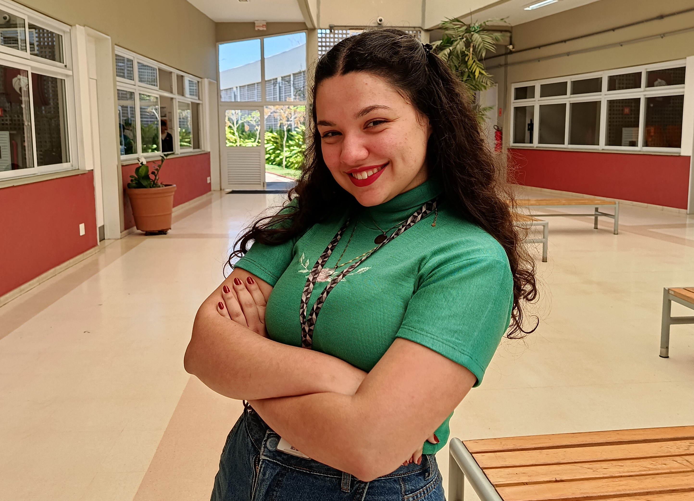
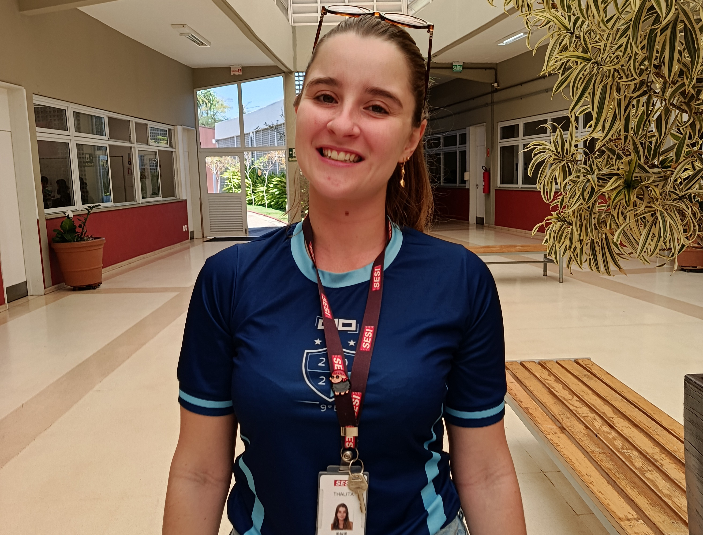

MULHERES —
Professoras
Palloma
Palloma atua há 1 ano e 3 meses como professora de Português. Após se formar em 2020, passou por estágios e experiências no SESI, até ser contratada como professora. Inspirada por sua professora do 6º ano, ama ensinar, conversar e contribuir para a formação dos alunos, oferecendo conselhos, escuta e acolhimento.

Desafio
Conciliar a faculdade com o trabalho durante a pandemia e adaptar-se às mudanças.
Significado de trabalhar com a educação
Formar pessoas preparadas para os desafios da vida.
Importância da função
Promover o senso crítico, a reflexão e a compreensão da sociedade por meio da educação e da literatura.
Conquistas
Realizar o sonho de trabalhar no SESI.
Além da sala de aula: a força e a inspiração de uma professora
Palloma se emociona ao ver os alunos aprendendo e reconhecendo seu esforço. Seu objetivo é contribuir para a formação deles e mostrar que, por trás de cada aula, existe muita dedicação.
Mensagem aos alunos
“Matéria dada significa muito mais do que só aprender na escola. Significa aprender coisas para lidar na vida.”Conselho
“Valorizem os professores e a estrutura. Mesmo que tenham a obrigação de gerar alunos que sairão de suas bolhas, vocês não tem ideia do que existe no mundo. Absorvam o que puderem, conhecimentos e experiências, valorizem o que tem, pois fora dessa bolha, são vocês por vocês.”A força feminina que transforma a educação e inspira novas gerações
“A força de ser professor, mesmo homem ou mulher. Mas o papel da professora acaba dificultando um pouco, porque tem alunos com ideias desrespeitosas, faz parecer que a autoridade não é tão respeitada quanto a dos homens, mas a forma de lidar com isso pode inspirar meninas a lidar melhor com esses desafios. Exige mais, mesmo com um sistema liderado por mulheres aqui no SESI. Exige força, mas é um papel fundamental, pois traz outros olhares.”
Edna
Edna atua há 9 meses como professora de Geografia. Iniciou sua trajetória profissional aos 14 anos, trabalhando em um escritório de advocacia, e, após experiências no Direito e no empreendedorismo, decidiu seguir seu sonho na educação. Inspirada pelas mulheres de sua família, especialmente sua avó, mãe e filha, encontra na sala de aula e no contato com os alunos sua maior satisfação.

Desafio
Enfrentar a transição de carreira e adaptar-se a uma nova área profissional.
Significado de trabalhar com a educação
Transformar vidas por meio do ensino e sentir-se parte ativa da sociedade.
Importância da função
Tansmitir ensinamentos que serão importantes para a vida do aluno.
Conquistas
Sentir-se realizada e completa ao assumir o papel de professora.
Além da sala de aula: a força e a inspiração de uma professora
Edna se inspira no desenvolvimento dos alunos, valoriza a parceria em sala de aula e destaca a importância da mulher na sociedade e o equilíbrio diante dos desafios.
Mensagem aos alunos
“Peguem todo o conhecimento que tiverem e transformem isso para o bem.”Thalita
Thalita atua há 8 meses como professora de Matemática no SESI de Vinhedo. Ex-aluna da instituição, trabalhou para pagar seu cursinho, cursou a faculdade e passou por estágios, aulas e projetos sociais até chegar ao SESI como professora. Inspirada por suas antigas professoras de Matemática e Artes, encontra sua maior satisfação em ensinar e contribuir para o aprendizado dos alunos.

Desafio
Conquistar seu espaço em uma área de exatas ainda marcada pela presença masculina.
Significado de trabalhar com a educação
Encontrar satisfação em ensinar, mesmo diante dos desafios da profissão.
Importância da função
Ensinar e desenvolver o senso crítico e a capacidade de opinião dos alunos.
Conquistas
Realizar o sonho de dar aulas no SESI.
Além da sala de aula: a força e a inspiração de uma professora
Thalita se motiva ao ver os alunos superando desafios e descobrindo novos conhecimentos. Destaca os desafios da docência e a capacidade das mulheres de conquistar espaço nas áreas de exatas.
Mensagem aos alunos
“Corram atrás dos sonhos, vocês são capazes.”